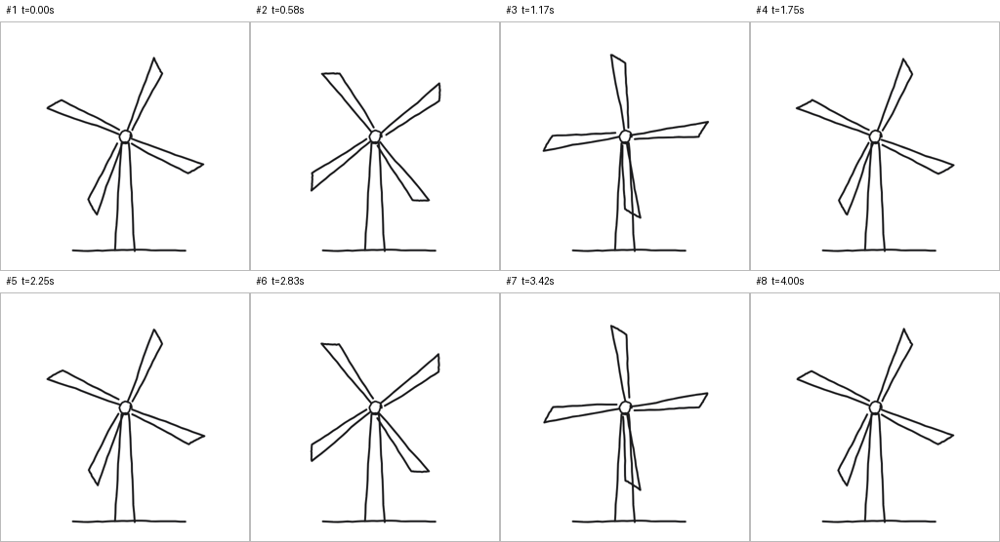
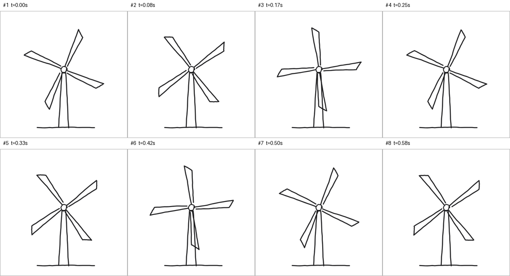

What we learned · 1
Vision critics need help seeing motion
aliasing
Eight evenly spaced frames lie about rotation


A correct 4-blade spin looked "jumpy" (3.25). Adding consecutive frames fixed the verdict (4.25).
hallucination
Critics invent fidelity errors, and revisers chase them
The critic called pixel-identical first frames "smaller and shifted"; revising against that made programs worse (pendulum 2.25 → 1.75). Fidelity is now measured in code (ink-overlap F1), and the vision model judges only motion.
judge noiseThe same render scored 4.00, then 2.50. Final scores average 3 runs of a separate judge model.